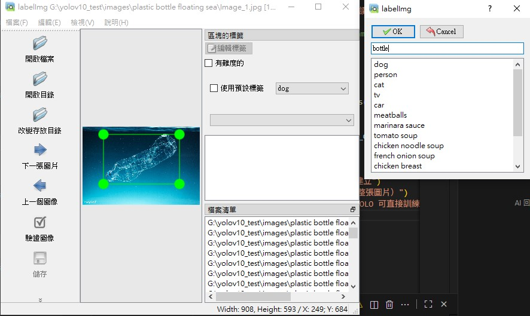
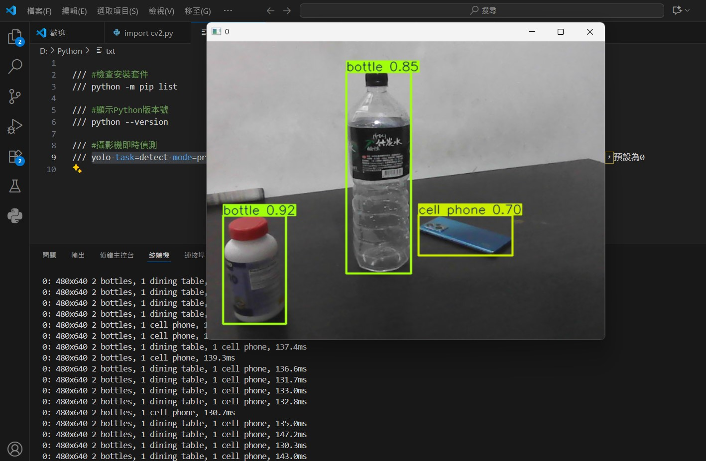
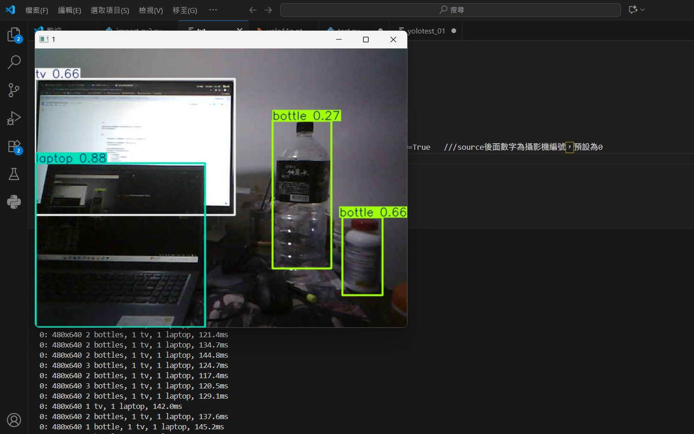

採用 Jetson Nano 運行輕量化 YOLOv12-N 模型，即時辨識水面上的寶特瓶與塑膠袋。
將辨識結果即時轉換為控制訊息，實現「感知—決策—執行」的高效分散式自動化流程。
整合 GPS 導航與 MPU-6050 姿態感測，精準驅動伺服馬達進行自動化垃圾捕撈。
針對海洋與河川漂浮垃圾議題進行環境資料收集，並研究 YOLO 深度學習模型與無人水面船 (USV) 相關技術文獻。
確立以 ROS2 為核心的分散式控制框架，選定 Jetson Nano 與樹莓派作為邊緣運算裝置，並完成硬體規格規劃與圖表製作。
撰寫 ROS2 控制節點與馬達驅動程式。收集寶特瓶、塑膠袋等水面垃圾資料集，並進行 YOLO 模型訓練與參數優化。
完成無人船機體組裝、攝影機與 GPS 模組整合。下水進行實機測試，驗證即時影像辨識與伺服馬達撈拾機構之運作效能。
使用 labelImg 進行資料標註，並透過模型即時推論，精準辨識水面廢棄物。

使用 labelImg 框選水面上的透明塑膠瓶，建立 bottle 標籤的自訂資料集。

在室內環境測試中，成功辨識出瓶子並達到 0.85 與 0.92 的高信心分數。

在包含螢幕與筆記型電腦等複雜背景中，系統仍能約 120ms 的速度穩定辨識目標。
Saga USV 結合多項跨領域技術，確保在複雜水域中能精準執行感知、決策與動作。
Jetson Nano / YOLOv12
負責水面即時影像串流與目標物推論，將垃圾座標轉換為相對距離回傳至主控台。
GPS / MPU-6050
整合衛星定位與六軸姿態感測，確保船體在風浪干擾下仍能維持既定航線與返航安全。
Arduino / IBT-2
接收 ROS2 Topic 傳遞之轉速指令，驅動無刷馬達進行推進，並控制伺服馬達完成撈拾動作。
Raspberry Pi / ROS2
扮演全船神經中樞，透過 Publisher/Subscriber 機制非同步處理各節點數據，並支援遠端監測。
透過樹莓派與 ROS2，系統具備三級自動化檢測與返航機制，確保航行安全。
每隔兩分鐘計算與出發點的距離，若即將超過 2KM 安全範圍，將自動停止動力並開始轉向返航。
捕撈目標後即時計算剩餘電量是否足夠回程；同時檢測船體載重，若達最大容量則啟動自動回程。
系統會記錄航線，若因滿載而提早返航，在清空垃圾後，無人船能重新回到記憶點繼續執行搜尋任務。
借鏡歐洲 SeaClear 計畫，未來將導入進階演算法與協作架構。
使多艘無人船可於同一水域協調作業，透過中央調度系統劃分區域，大幅提高清理效率。
整合同步定位與建圖技術，使無人船能自主建構水域地圖並規劃最優路徑進行作業。
增加太陽能充電模組，提升續航力並減少對岸基充電設施的依賴。
選用耐腐蝕性更佳的高分子材料，以提升無人船在鹽水環境中的長期耐久性。
設計具備伸縮性與可變形結構的捕撈機構，以處理不同尺寸、形狀的漂浮物。
從封閉水域走向多元任務平台
提升抗風浪能力與航向穩定控制，適應港灣環境。
擴充感測模組，成為多功能水域環境監測平台。
投入颱風過後漂流木與大型垃圾聚集區進行高效率清理。
銘傳大學 人工智慧應用學系
指導教授：郭庭榕 老師
以下是我在學習過程中累積下來的練習作品，從底層邏輯到前端介面，展現完整的開發能量。
YOLOv10 / Python
整合 AI 物件偵測技術，自建資料集訓練模型，實現即時水面垃圾辨識與無人船自動化導航收集功能。
Python / LLM API
獨立開發的 Discord 語音與互動機器人，串接 Pollinations 圖片生成與大型語言模型，提供豐富互動體驗。
Bootstrap 5 / jQuery
運用 Bootstrap 5 進行 RWD 切版，搭配 jQuery 與 SweetAlert2 實作表單驗證與友善的互動回饋機制。
JavaScript / OpenData
透過政府開放資料 API 串接全台餐飲資訊，結合動態表格渲染與資料過濾功能，提供便利的查詢服務。